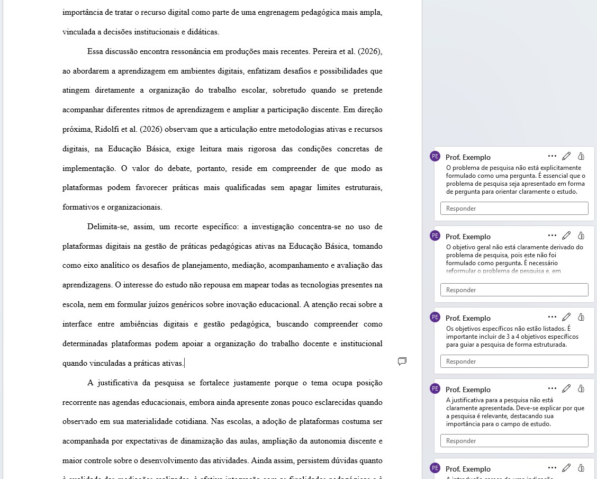

Da orientação à banca, com a IA ao seu lado
O Rubric AI Masters apoia professores de mestrado em dois momentos. Na orientação, a IA comenta a monografia no próprio arquivo do Word e acompanha a evolução versão após versão. Na banca, ela lê o trabalho concluído e entrega o arquivo comentado e o parecer preenchido, prontos para você revisar. Em ambos, quem decide é o professor.
"A IA analisa. O professor decide."
Comentários nativos, dentro do arquivo do aluno

Ver em tamanho real